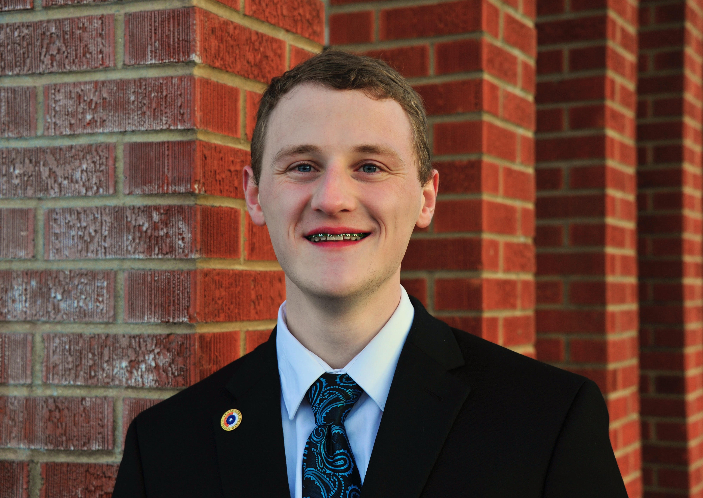

Thomas Gardner | WDD 130
Hello! My name is Thomas Gardner - I love my Family and I am a Child of God!
Why HTML / Why this class? Well, primarily it's because the entire Internet is full of websites, most of which use the HTML language in some way. If you go into Web Design, Cyber Security, or simply want a fun hobby, HTML is a great language to understand!
I am passionate about Cyber Security and so I am majoring in it. I have worked Cyber Security for a handful of years and primarily perform Penetration Tests (Web/API, Thick, IOS, Android). Although I have this experience, I understand there is still much to learn and do. I have come to understand it is a lot more important to focus on where you are going, than focusing only on where you are. Always keep moving and remember you're not 'racing against anyone' but your self, you're progressing each day.
Hobbies are important, and I have a few of them! Nothing crazy, but I enjoy them. Computers are of course a big thing I enjoy working with, but outside of that I love my Family and spending time with them. Wether that is TV, Board Games, hiking, or filming / editing silly videos.
I have been a member of the Church of Jesus Christ of Latter Day Saints for my whole life. I love Jesus Christ and His Gospel and was blessed to serve for 2 years in the Texas Fort Worth Mission - TFWM (2021 - 2023).